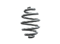
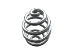
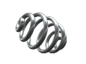
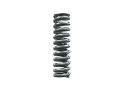
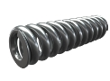

Пружины для мотоциклов, квадроциклов и снегоходов
Изготовление винтовых пружин на заказ партиями от 1-й штуки от 1-го дня.
Выполним по разнообразным параметрам, чертежам или образцу, фото, эскизу.
(сроки выполнения заказа обговариваются с каждым клиентом индивидуально)
- 
- 
- 
- 
-

- 
Изготовление и производство пружин для мотоциклов, квадроциклов и снегоходов
Производственная компания ООО "Индустриал Спрингс" изготавливает и реализует пружины для мотоциклов, квадроциклов и снегоходов по всей территории Украины. Мы принимает заказы на производство пружин по чертежам и образцам заказчика таких как:
- - Пружины переднего и заднего амортизатора мотоцикла;
- - Пружины вилки мотоцикла;
- - Пружины подвески мотоцикла;
- - Пружины сцепления мотоцикла;
- - Пружины для амортизаторов квадроцикла;
- - Пружины для подвески квадроцикла;
- - Пружины для амортизаторов снегохода;
- - Пружины задней оси снегохода;
- - Пружины задней и передней подвески снегохода;
- - Пружины ведущего вариатора снегохода;
- - Пружины стартера снегохода.
Пружины можно заказать и купить у нас от 1 штуки или крупными и мелкооптовыми партиями. При оформлении заявки на расчет и изготовление пружин для мотоциклов, квадроциклов и снегоходов необходимо проконсультироваться с нашими специалистами, для точного составления технического задания к Вашему заказу, в котором будут учтены все необходимые параметры. Для заказа и ознакомления с прайсом свяжитесь с мененджером нашей компании через форму заявки или по одному из телефонов: 066 283 80 82, 097 305 81 85, 0532 591 590.